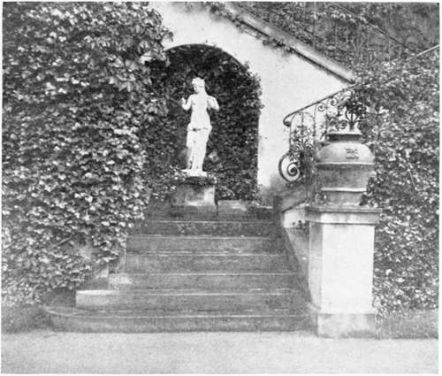

Historical Sketches. Continued
Description
This section is from the book "Landscape Gardening", by Andrew Jackson Downing. Also available from Amazon: Landscape Gardening.
Historical Sketches. Continued
Landscape Gardening is, indeed, only a modern word, first coined, we believe, by Shenstone.
The most distinguished English landscape gardeners of recent date, are the late Humphrey Repton, who died in 1818; and since him John Claudius Loudon * better known in this country, as the celebrated gardening author. Rep-ton's taste in Landscape Gardening was cultivated and elegant, and many of the finest parks and pleasure grounds of England, at the present day, bear witness to the skill and harmony of his designs. His published works are full of instructive hints, and at Cobham Hall, one of the finest seats in Britain, is an inscription to his memory, by Lord Darnley.
Mr. Loudon's writings and labors in tasteful gardening, are too well known, to render it necessary that we should do more than allude to them here. Much of what is known of the art in this country undoubtedly is, more or less directly, to be referred to the influence of his published works. Although he is, as it seems to us, somewhat deficient as an artist in imagination, no previous author ever deduced, so clearly, sound artistical principles in Landscape Gardening and Rural Architecture; and fitness, good sense, and beauty, are combined with much unity of feeling in all his works.
* Repton was easily the greatest landscape gardener of his day. He carried out extensive works in England and his writings on the subject were fresh, vigorous and permanently valuable. Of these there were various editions, one of the best under the title of "Landscape Gardening," having been edited by J. C. Loudon in 1840. An abridged edition has been more recently published in America, edited by Mr. John Nolen. ("The Art of Landscape Gardening," Boston, 1908.) The cyclopedic-works of Loudon had some vogue in America in their day, but have long since been completely superseded by the indigenous literature of gardening. — F. A. W.
As the modern style owes its origin mainly to the English, so it has also been developed and carried to its greatest perfection in the British Islands. The law of primogeniture, which has there so long existed, in itself, contributes greatly to the continual improvement and embellishment of those vast landed estates, that remain perpetually in the hands of the same family. Magnificent buildings, added to by each succeeding generation, who often preserve also the older portions with the most scrupulous care; wide spread parks, clothed with a thick velvet turf, which, amid their moist atmosphere, preserves during great part of the year an emerald greenness — studded with noble oaks and other forest trees which number centuries of growth and maturity; these advantages, in the hands of the most intelligent and the wealthiest aristocracy in the world, have indeed made almost an entire landscape garden of " merry England." Among a multitude of splendid examples of these noble residences, we will only refer the reader to the celebrated Blenheim, the seat of the Duke of Marlborough, where the lake alone (probably the largest piece of artificial water in the world) covers a surface of two hundred acres: Chatsworth, the varied and magnificent seat of the Duke of Devonshire, where there are scenes illustrative of almost every style of the art: and Woburn Abbey, the grounds of which are full of the choicest specimens of trees and plants, and where the park, like that of Ashbridge, Arundel Castle, and several other private residences in England, is only embraced within a circumference of from ten to twenty miles.
Fig. 1. Garden Stairway.
On the continent of Europe, though there are a multitude of examples of the modern style of landscape gardening, which is there called the English or natural style, yet in the neighborhood of many of the capitals, especially those of the south of Europe, the taste for the geometric or ancient style of gardening still prevails to a considerable extent; partially, no doubt, because that style admits, with more facility, of those classical and architectural accompaniments of vases, statues, busts, etc., the passion for which pervades a people rich in ancient and modern sculptural works of art. Indeed many of the gardens on the continent are more striking from their numerous sculpturesque ornaments, interspersed with fountains and jets-d'eau, than from the beauty or rarity of their vegetation, or from their arrangement.
In the United States, it is highly improbable that we shall ever witness such splendid examples of landscape gardens as those abroad, to which we have alluded.* Here the rights of man are held to be equal; and if there are no enormous parks, and no class of men whose wealth is hereditary, there is, at least, what is more gratifying to the feelings of the philanthropist, the almost entire absence of a very poor class in the country; while we have, on the other hand, a large class of independent landholders, who are able to assemble around them, not only the useful and convenient, but the agreeable and beautiful, in country life.
* Now, in 1921, one is strongly inclined to doubt Mr. Downing's prediction. It seems quite possible that America may soon show, if she does not already possess, many of the finest examples of landscape gardening in the world, both public and private. — F. A. W.
The number of individuals among us who possess wealth and refinement sufficient to enable them to enjoy the pleasures of a country life, and who desire in their private residences so much of the beauties of landscape gardening and rural embellishment as may be had without any enormous expenditure of means, is every day increasing. And although, until lately, a very meagre plan of laying out the grounds of a residence, was all that we could lay claim to, yet the taste for elegant rural improvements is advancing now so rapidly, that we have no hesitation in predicting that in half a century more, there will exist a greater number of beautiful villas and country seats of moderate extent, in the Atlantic States, than in any country in Europe, England alone excepted. With us, a feeling, a taste, or an improvement, is contagious; and once fairly appreciated and established in one portion of the country, it is disseminated with a celerity that is indeed wonderful, to every other portion. And though it is necessarily the case where amateurs of any art are more numerous than its professors, that there will be, in devising and carrying plans into execution, many specimens of bad taste, and perhaps a sufficient number of efforts to improve without any real taste whatever, still we are convinced the effect of our rural embellishments * will in the end be highly agreeable, as a false taste is not likely to be a permanent one in a community where everything is so much the subject of criticism.
* It may be observed that Mr. Downing speaks constantly of "embellishments." The modern Landscape Gardener abhors this word, as all phrases referring to "ornamental" treatment. This is because the modern professional Landscape Gardener thinks of his art as something fundamental, radical, as dealing with the most elemental facts of structure, rather than as concerned with any superficial "embellishment." This change of feeling marks a distinct professional advance, though, unfortunately, the lay public still thinks of Landscape Gardening as mainly an incidental ornamental afterthought — a sort of horticultural camouflage to gross utilities. — F. A. W.
With regard to the literature and practice of Landscape Gardening as an art, in North America, almost everything is yet before us, comparatively little having yet been done. Almost all the improvements of the grounds of our finest country residences, have been carried on under the direction of the proprietors themselves, suggested by their own good taste, in many instances improved by the study of European authors, or by a personal inspection of the finest places abroad. The only American work previously published which treats directly of Landscape Gardening, is the American Gardener's Calendar, by Bernard McMahon of Philadelphia. The only practitioner of the art, of any note, was the late M. Parmentier of Brooklyn, Long Island.*
M. Andre Parmentier was the brother of that celebrated horticulturist, the Chevalier Parmentier, Mayor of Enghien, Holland. He emigrated to this country about the year 1824, and in the Horticultural Nurseries which he established at Brooklyn, he gave a specimen of the natural style of laying out grounds, combined with a scientific arrangement of plants, which excited public curiosity, and contributed not a little to the dissemination of a taste for the natural mode of landscape gardening.
During M. Parmentier's residence on Long Island, he was almost constantly applied to for plans for laying out the grounds of country seats, by persons in various parts of the Union, as well as in the immediate proximity of New York. In many cases he not only surveyed the demesne to be improved, but furnished the plants and trees necessary to carry out his designs. Several plans were prepared by him for residences of note in the Southern States; and two or three places in Upper Canada, especially near Montreal, were, we believe, laid out by his own hands and stocked from his nursery grounds. In his periodical catalogue, he arranged the hardy trees and shrubs that flourish in this latitude in classes, according to their height, etc., and published a short treatise on the superior claims of the natural, over the formal or geometric style of laying out grounds. In short, we consider M. Parmentier's labors and examples as having effected, directly, far more for landscape gardening in America, than those of any other individual whatever.
* These statements are obviously out of chile in 1921, but are interesting historically as showing what sort of a country Mr. Downing found himself in in 1841.
The introduction of tasteful gardening in this country is, of course, of a very recent date. But so long ago as from 25 to 50 years, there were several country residences highly remarkable for extent, elegance of arrangement, and the highest order and keeping. Among these, we desire especially to record here the celebrated seats of Chancellor Livingston, Wm. Hamilton, Esq., Theodore Lyman, Esq., and Judge Peters.
Continue to: